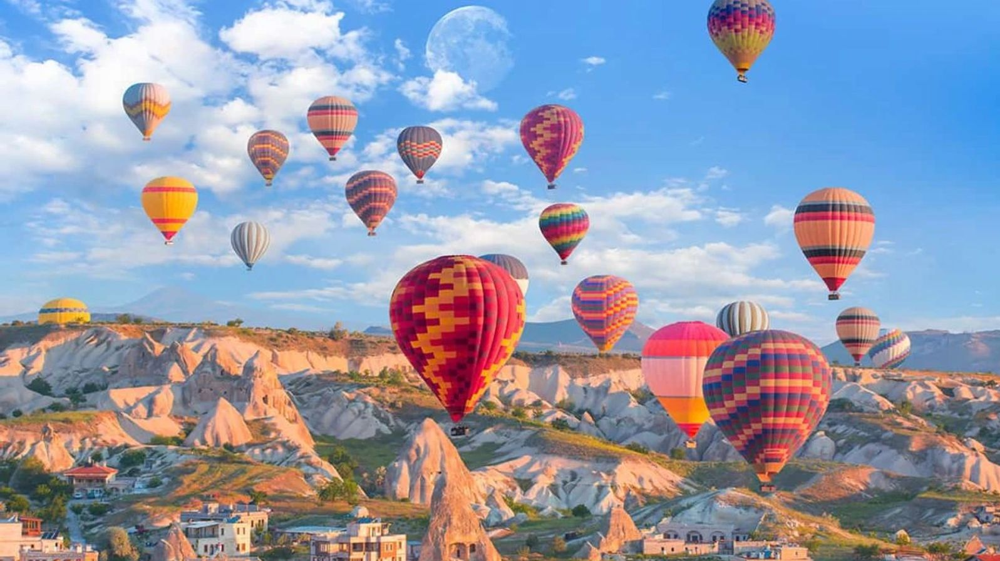

Nevşehir Hakkında
Nevşehir, İç Anadolu Bölgesi'nde yer alan ve tarihi ve doğal güzellikleriyle ünlü bir şehirdir. Kapadokya'nın benzersiz peri bacaları, yer altı şehirleri ve sıcak hava balonları ile dikkat çeker.
Gezilecek Yerler
- Peri Bacaları
- Göreme Açık Hava Müzesi
- Uçhisar Kalesi
- Kaymaklı Yeraltı Şehri
- İhlara Vadisi
Turlar
Nevşehir'de yapabileceğiniz aktiviteler ve turlar:
- Sıcak Hava Balon Turu
- Yeraltı Şehirleri Turu
- Kapadokya Doğa Yürüyüşü
- At Turu

Fiyat Bilgisi
Nevşehir'de sunulan tur hizmetlerinin ortalama fiyatları:
- Sıcak Hava Balon Turu: 1200 TL
- Yeraltı Şehirleri Turu: 350 TL
- Kapadokya Doğa Yürüyüşü: 250 TL
- At Turu: 400 TL